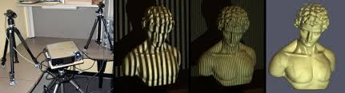
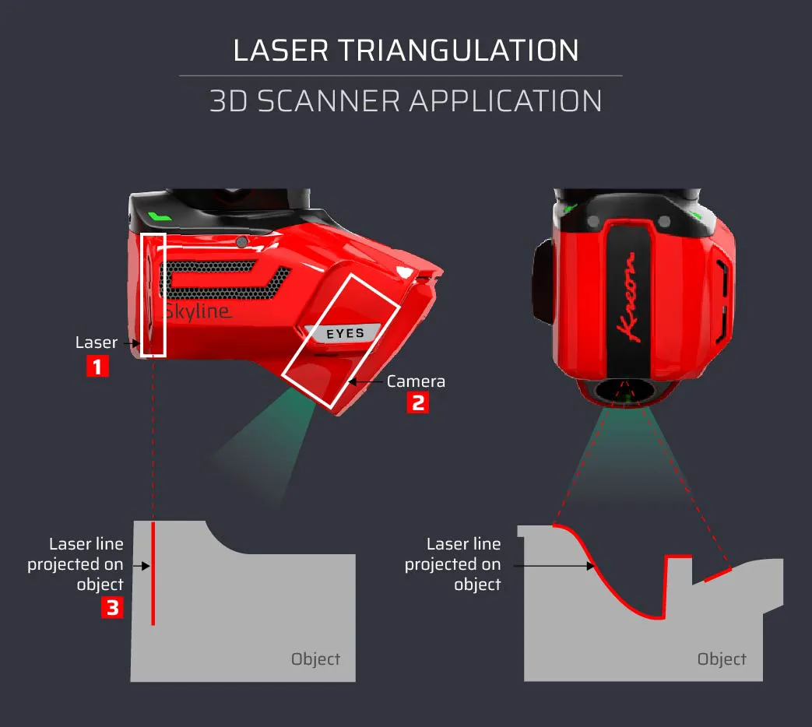
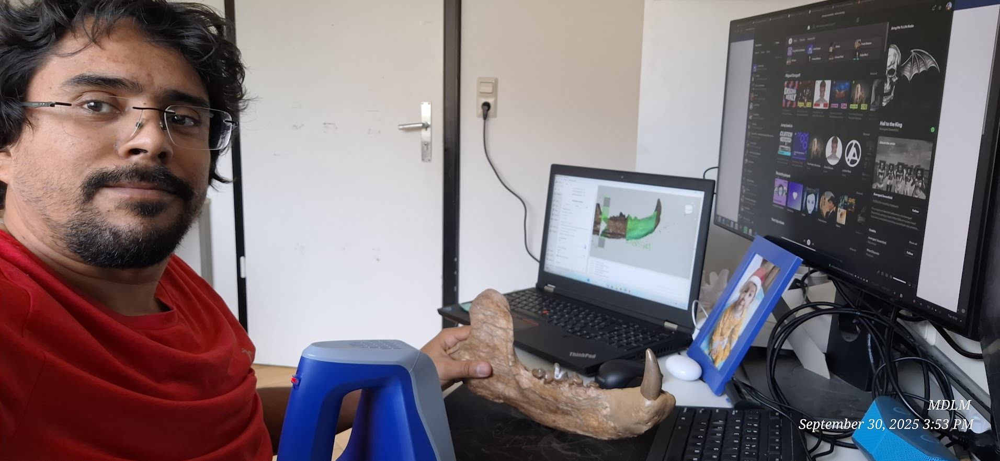
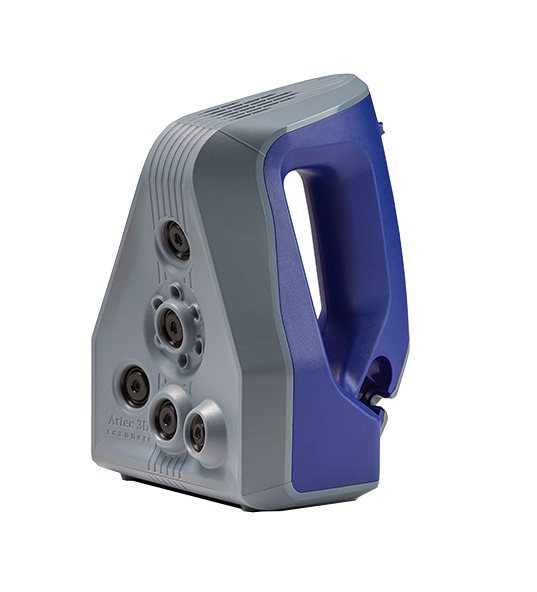
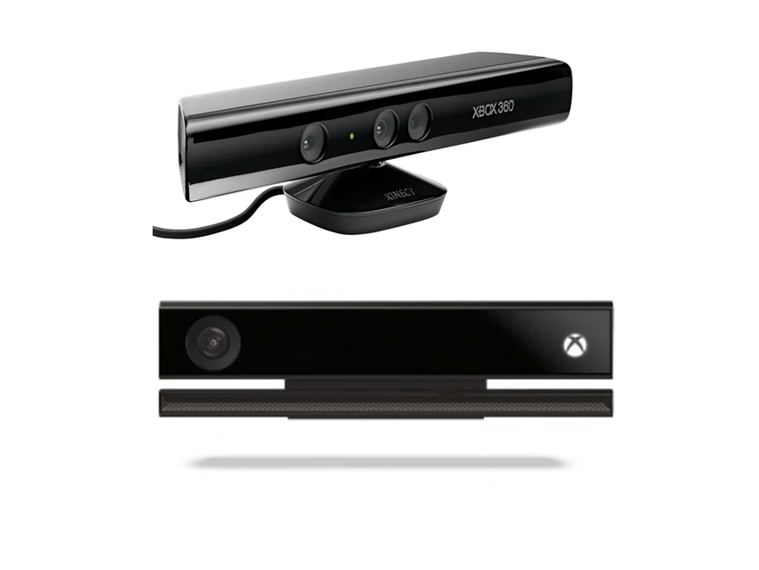

Paleontología Virtual
Día 3: Adquisición II (Escaneo Superficial y Tomografía)
2026-04-17
Escaneo Láser de Superficie
¿Qué es el Escaneo de Superficie?
El escaneo 3D de superficie usa luz activa (láser o luz estructurada) para medir la geometría de un objeto de forma precisa y sin contacto físico.
A diferencia de la fotogrametría —que infiere la forma a partir de fotos—, el escáner mide directamente la posición 3D de cada punto.
- La escala real queda registrada automáticamente
- No requiere cámaras convencionales
- El resultado es una nube de puntos o una malla directa

Tipos de Tecnología de Escaneo
Triangulación Láser
- Proyecta un haz de luz puntual o lineal
- Mide la posición del reflejo con una cámara lateral
- Muy alta precisión (décimas de milímetro)
- Rango corto: ideal para especímenes pequeños
- 💰 Costo: $2,000 – $50,000 USD
Luz Estructurada
- Proyecta un patrón de franjas sobre el objeto
- Mide la deformación del patrón para calcular profundidad
- Velocidad muy alta, captura completa en segundos
- Sensible a la luz ambiental intensa
- 💰 Costo: $5,000 – $30,000 USD
Ejemplos
Luz Estructurada

Triangulación Láser

Tipos de Tecnología de Escaneo (cont.)
Time of Flight (ToF)
- Emite un pulso de luz y mide el tiempo de retorno
- Ideal para objetos y espacios grandes (hasta cientos de metros)
- Menor resolución que la triangulación
- Usado en LiDAR terrestre y escáneres de arquitectura
- 💰 Costo: $10,000 – $100,000+ USD
Fotogrametría vs. Escaneo
| Aspecto | Fotogrametría | Escaneo Láser |
|---|---|---|
| Escala real | ❌ No | ✅ Sí |
| Textura | ✅ Alta | ⚠️ Depende |
| Costo | ✅ Bajo | ❌ Alto |
| Velocidad | Medio | Rápido |
| Superficies oscuras | ✅ OK | ❌ Problema |
Limitaciones del Escaneo Láser
Limitaciones Físicas
- Oclusión: No captura lo que no “ve” — los huecos internos son invisibles
- Superficies problemáticas: Las negras, brillantes o translúcidas absorben o reflejan mal el láser
- Solo exterior: Incapaz de ver el interior de un fósil dentro de roca
- Movimiento: Cualquier movimiento durante el escaneo genera artefactos
Limitaciones Prácticas
- Dependencia de hardware: Si el sensor falla, no hay captura alternativa
- Condiciones ambientales: La luz solar directa satura los sensores de luz estructurada y ToF
- Tamaño del objeto: Cada tecnología tiene un rango óptimo — un escáner de mano no es bueno para microfósiles
- Curva de aprendizaje: Software y parámetros técnicos requieren certificación o entrenamiento
Rangos de Costo
💚 Bajo Costo
$150 – $800 USD
- Microsoft Kinect (discontinuado)
- Intel RealSense D435
- Creality Raptor
Ideal para práctica académica. Precisión limitada (±1–5 mm).
🟡 Gama Media
$2,000 – $15,000 USD
- Shining3D EinScan SP/HX
- Peel 3D
- Revopoint RANGE
Precisión buena (±0.1 mm). Usados en paleontología de campo.
🔴 Gama Alta / Metrología
$30,000 – $200,000+ USD
- Artec Eva / Leo
- Creaform HandySCAN
- FARO Focus
Precisión de museo (±0.01 mm). Estándar en colecciones de referencia internacional.
Software para Escaneo Láser
Propietario (incluido con hardware)
- Artec Studio — Flujo completo para escáneres Artec
- EinScan Software — Para gama Shining3D
- Peel Software — Para escáneres Peel
Open Source / Gratuito
- MeshLab — Post-proceso universal de mallas
- CloudCompare — Análisis y comparación de nubes de puntos
- RTAB-Map — SLAM + reconstrucción (ideal con Kinect)
- Open3D — Librería Python para procesamiento avanzado


Tip
Para un entorno académico de bajo costo, la combinación Kinect + RTAB-Map + MeshLab ofrece resultados medianamente buenos para objetos grandes.
Caso Práctico: Microsoft Kinect
¿Qué es el Kinect?
El Microsoft Kinect nació en 2010 como accesorio de juego para Xbox 360, pero se convirtió en la puerta de entrada más accesible al escaneo 3D estructurado.
Componentes internos
- Cámara RGB — Captura color (640×480 px en Kinect v1)
- Proyector IR — Emite un patrón de puntos infrarrojos invisible al ojo humano
- Cámara IR — Lee la deformación del patrón para calcular profundidad
- Motor de inclinación — Ajusta el ángulo verticalmente (solo Kinect v1)
- Array de micrófonos — No útil para escaneo, pero parte del hardware

Características y Especificaciones
Kinect v1 (Xbox 360)
| Especificación | Valor |
|---|---|
| Resolución profundidad | 640 × 480 px |
| Rango de trabajo | 0.5m – 3.5m |
| FPS | 30 fps |
| Campo de visión | 57° H × 43° V |
| Interfaz | USB 2.0* |
| Precio de segunda mano | ~$100–$500 MXN |
Kinect v2 (Xbox One)
| Especificación | Valor |
|---|---|
| Resolución profundidad | 512 × 424 px |
| Tecnología | Time of Flight |
| Rango de trabajo | 0.5m – 4.5m |
| FPS | 30 fps |
| Campo de visión | 70° H × 60° V |
| Interfaz | USB 3.0* |
Limitaciones del Kinect para Paleontología
- Resolución espacial: Los fósiles pequeños (< 20 cm) quedan con muy poco detalle — el Kinect fue diseñado para capturar personas enteras
- Ruido a distancia: Más allá de 2.0m la nube de puntos se vuelve ruidosa e imprecisa
- Luz solar directa: El proyector IR queda saturado por la luz del sol — solo funciona en interiores o sombra
- Superficies sin textura: El patrón IR no ancla bien en superficies blancas lisas o monocromáticas
- Hardware descontinuado: Microsoft dejó de fabricar el Kinect en 2017, solo disponible de segunda mano o con adaptadores
- Requiere adaptador: El Kinect para Xbox necesita un kit de adaptador para conectarlo a PC vía USB
Software: RTAB-Map
RTAB-Map (Real-Time Appearance-Based Mapping) es el software de referencia para usar el Kinect como escáner 3D.
¿Qué hace?
- Implementa SLAM (Simultaneous Localization And Mapping)
- Registra cada fotograma de profundidad con el anterior
- Construye un mapa 3D en tiempo real
- Detecta cuando ya “conoce” una zona (cierre de bucle)
- Genera una malla 3D reconstruida al finalizar
Disponible en
- Windows, Linux, macOS
- Gratuito y open source
Flujo básico en RTAB-Map
Abrir RTAB-Map
↓
Seleccionar: Kinect (libfreenect)
↓
[Start] — mueve lentamente el sensor
↓
[Stop] — cuando estés satisfecho
↓
Edit → Optimize Graph (corrige deriva)
↓
File → Export 3D Clouds
↓
Exportar .OBJ o .PLY con texturaTécnica de Escaneo con Kinect
Antes de empezar
- Iluminar el espécimen con luz difusa, nunca luz solar directa
- El objeto debe tener textura visible — poner referencias visuales si es necesario (papel de puntos)
- Mantener el Kinect entre 0.5m y 2m del objeto
- Ajustar la inclinación del motor antes de empezar
Durante el escaneo
- Pulsar Start (▶) — esperar puntos verdes (features)
- Mover muy lento (~5 cm/segundo)
- Solapar cada posición (mínimo 50% overlap)
- Hacer círculos completos alrededor del objeto
- Si aparece rojo (tracking perdido): ⚠️ volver a zona conocida
Señales de calidad
| Indicador | Significado |
|---|---|
| 🟢 Barra verde | Tracking correcto |
| Inliers > 50 | Excelente |
| 🟡 Barra amarilla | Ir más despacio |
| 🔴 Pantalla roja | Tracking perdido |
Parámetros clave (pre-configurados)
| Parámetro | Valor | Por qué |
|---|---|---|
| MaxDepth | 3.5m | Evita ruido de fondo |
| MinDepth | 0.5m | Zona ciega del Kinect |
| MaxFeatures | 1000 | Mejor tracking |
| Bundle Adjustment | ON | Corrige geometría |
Post-proceso: De Nube de Puntos a Malla 3D
Una vez capturada la nube en RTAB-Map, necesitamos convertirla en una malla cerrada (watertight) apta para análisis.
En RTAB-Map
- Edit → Optimize Graph — corrige errores de trayectoria acumulados
- File → Export 3D Clouds con estos ajustes:
- Filtrado: Voxel size
0.005(5mm máximo detalle) - Método: Poisson (Depth 8–10)
- Activar “Generate texture” para color
- Filtrado: Voxel size
- Exportar en .obj (con textura) o .ply (nube pura)
Limpieza final en MeshLab
1. Filters → Cleaning →
Remove Isolated pieces
2. Filters → Smoothing →
Laplacian Smooth (2–3 iter.)
3. Filters → Reconstruction →
Screened Poisson Surface
(si la malla tiene agujeros)
4. File → Export Mesh As →
.OBJ / .STL / .PLYTomografía Computarizada (CT)
¿Qué es la Tomografía Computarizada?
La Tomografía Computarizada (CT, del inglés Computed Tomography) es el estándar de oro en paleontología virtual para el estudio de estructuras internas.
A diferencia del escaneo superficial, la CT usa Rayos X que atraviesan el objeto, revelando su interior sin dañarlo.
- Detectores registran cuánta radiación absorbió cada punto del material
- Una computadora reconstruye rebanadas (secciones transversales) del objeto
- El resultado es un volumen 3D completo, interior y exterior
- Se puede “ver dentro” del fósil sin extraerlo de la roca

¿Cómo funciona el CT?
El principio físico
- Una fuente de Rayos X gira alrededor del objeto
- En cada ángulo, los detectores miden la atenuación de la radiación
- El algoritmo de retroproyección filtrada reconstruye secciones 2D
- Las secciones se apilan en un volumen 3D (stack de imágenes)
El concepto de Vóxel
Un vóxel (volumetric pixel) es el equivalente 3D del píxel. Cada vóxel guarda un valor de densidad en escala de grises llamado Unidades Hounsfield (HU):
| Material | HU aproximados |
|---|---|
| Aire | -1000 |
| Grasa | -100 a -50 |
| Agua | 0 |
| Hueso cortical | +400 a +1900 |
Archivos DICOM
- DICOM es el formato estándar médico
- Cada “rebanada” es una imagen DICOM
- Una serie típica tiene 400 – 2,000 imágenes
- Cada imagen incluye metadatos: resolución, orientación, escala real
- Ventaja crucial: la escala real está embebida en el archivo
Nota
Un CT clínico tiene rebanadas de ~0.5mm. Un Micro-CT puede llegar a 1–10 micrómetros — capaz de ver células individuales.
Tipos de Tomografía
CT Clínico (Médico)
- Diseñado para el cuerpo humano
- Resolución: ~0.5 mm por vóxel
- Ideal para: vertebrados grandes, cráneos, fémures
- Acceso: Convenios con hospitales o clínicas
- Costo: Variable; a veces disponible con convenio universitario
Ventaja: Amplia disponibilidad geográfica
CT Industrial
- Diseñado para materiales y piezas de manufactura
- Resolución: 0.05 – 0.5 mm por vóxel
- Mayor rango de densidades detectables (metales)
- Ideal para: fósiles grandes, matrices de roca dura
- Costo: $200 – $1,000 USD por sesión
Ventaja: Soporta objetos muy densos
Micro-CT
- Diseñado para especímenes pequeños (< 10 cm)
- Resolución: 1 – 50 micrómetros por vóxel
- Equipo de laboratorio especializado
- Ideal para: microfósiles, dientes, vértebras pequeñas
- Costo equipo: $200,000 – $1,000,000+ USD
- Costo uso: $100 – $500 USD/hora
Ventaja: Detalle sin igual
Limitaciones de la Tomografía
Limitaciones Técnicas
- Contraste de densidad: Si el hueso y la roca circundante tienen densidades similares, el software no puede separarlos (artefacto de “partial volume”)
- Metales: Generan artefactos de haz endurecido (beam hardening) — zonas negras o blancas falsas
- Tamaño vs. resolución: A mayor espécimen, menor resolución posible
- Tiempo de escaneo: Un Micro-CT puede tardar 4–12 horas por muestra
Limitaciones Prácticas
- Costo prohibitivo: El acceso a Micro-CT requiere laboratorio especializado
- Nula portabilidad: Los equipos pesan varias toneladas
- Transporte del espécimen: Requiere permisos y condiciones especiales de seguridad para fósiles frágiles
- Formato propietario: Aunque DICOM es estándar, cada fabricante añade campos que no siempre son compatibles
- Radiación: El uso repetido en el mismo espécimen puede alterar materiales orgánicos residuales
Acceso a la Tomografía: ¿Cómo llegar sin laboratorio propio?
Vías de acceso reales
- Hospitales públicos: Algunos permiten escaneos en horarios valle con justificación de investigación
- Universidades: Muchas cuentan con Micro-CT en departamentos de biología o materiales
- Servicios externos: Empresas especializadas (efecto “core facility”) venden tiempo de uso
- Datos existentes: MorphoSource y Phenome10K distribuyen datos DICOM de fósiles ya escaneados
Repositorios de datos CT abiertos
| Recurso | Contenido |
|---|---|
| MorphoSource | Fósiles y anatomía comparada |
| Phenome10K | CT de 10k+ especímenes |
| DigiMorph | Visualizaciones interactivas |
Tip
Para este curso usaremos datos de MorphoSource — gratuitos y de alta calidad.
Software para Procesamiento CT
Panorama de Software para CT
El primer paso al recibir datos DICOM es convertir el volumen en una malla 3D utilizable. Esto se llama segmentación.
Software Comercial
| Software | Uso típico | Costo |
|---|---|---|
| Avizo | Paleontología/medicina | ~$10,000/año |
| MIMICS | Biomedicina | ~$15,000/año |
| VGStudio MAX | Industrial | ~$8,000/año |
| Dragonfly | Ciencias de materiales | ~$5,000/año |
Potentes pero fuera del alcance académico general.
Software Gratuito / Open Source
| Software | Ventaja |
|---|---|
| 3D Slicer | Más completo, activo, extensiones |
| ITK-SNAP | Sencillo, ideal para empezar |
| Fiji (ImageJ) | Análisis de imágenes 2D/3D |
| ParaView | Visualización científica avanzada |
| Seg3D | Segmentación científica CIBC |
Nota
Para este curso usaremos 3D Slicer — es gratuito, multiplataforma y es el estándar de facto en investigación.
Ejemplo Práctico: 3D Slicer
3D Slicer es una plataforma open source de código libre para visualización médica e investigación. Desarrollada activamente desde 1998 (Brigham and Women’s Hospital / MIT).
¿Qué puede hacer?
- Cargar series DICOM completas (cientos de imágenes)
- Visualizar el volumen en los tres planos (axial, coronal, sagital) y en 3D
- Segmentar estructuras por densidad, color o dibujado manual
- Generar modelos 3D de superficies (mallas)
- Exportar a STL, OBJ, PLY para análisis o impresión 3D
- Medir distancias, ángulos y volúmenes directamente en el volumen
Extensiones relevantes
- SegmentEditorExtra — herramientas avanzadas de segmentación
- SlicerMorph — morfometría geométrica 3D
- Endocast — extracción de endocraneos digitales
- BoneTexture — análisis de microestructura ósea
Tip
SlicerMorph fue desarrollado específicamente para paleontología y biología evolutiva.
Flujo de Trabajo en 3D Slicer
Paso 1: Cargar datos
Menú → File → Add DICOM Data
→ Import DICOM files
→ Seleccionar carpeta con imágenes
→ LoadPaso 2: Explorar el volumen
- Vista axial, coronal y sagital simultáneas
- Ajustar Window/Level para ver mejor los huesos
- Usar scroll para navegar entre rebanadas
Paso 3: Segmentar
Módulo → Segment Editor
→ Add (+) — crear nuevo segmento
→ Threshold — definir rango de HU del hueso
→ Islands → Keep largest island
→ Scissors → recortar artefactos
→ Smoothing → suavizar el resultadoPaso 4: Exportar el modelo 3D
Módulo → Segmentations
→ Export/Import Models and Tables
→ Output: Models
→ Formato: OBJ / STLLa Técnica de Umbralización (Thresholding)
El principio fundamental de la segmentación digital de fósiles es el umbral de densidad:
¿Cómo funciona?
- Cada vóxel tiene un valor de densidad (HU)
- Definimos un umbral mínimo y máximo — por ejemplo: 400 a 1900 HU para hueso cortical
- El software colorea todos los vóxeles dentro de ese rango
- El resultado es la selección visual del hueso separado de la roca
El Problema del Contraste
Si el fósil tiene densidad similar a la matriz rocosa, los umbrales se superponen y es necesario segmentar manualmente con las herramientas de pincel (Paint) o tijeras (Scissors).
Herramientas de Segment Editor
| Herramienta | Uso |
|---|---|
| Threshold | Selección automática por HU |
| Paint | Pincel manual en 2D/3D |
| Erase | Borrar partes de la selección |
| Draw | Contorno manual en una rebanada |
| Scissors | Recortar una región entera |
| Grow from Seeds | Relleno automático desde semillas |
| Islands | Eliminar fragmentos sueltos |
| Smoothing | Suavizar la superficie final |
Recursos y Conclusiones
Herramientas y Recursos
🔧 Software (Gratuito)
- RTAB-Map — Escaneo con Kinect
- MeshLab — Post-proceso de mallas
- CloudCompare — Análisis de nubes de puntos
- 3D Slicer — Segmentación CT
- Blender — Edición y reescalado
📐 Addon de Blender
- Measure and Scale — Escalado de modelos fotogramétricos
🌐 Repositorios de Modelos 3D
- MorphoSource — CT y fotogrametría de especímenes
- Sketchfab — Visualización interactiva
- Phenome10K — CT de 10,000+ especímenes
- DigiMorph — Biblioteca CT con visualización
Conclusiones del Día 3
Escaneo Láser
- Mide la geometría directamente — escala real incluida
- Ideal para superficies externas medianas o grandes
- El Kinect democratiza el acceso (~$50 USD de segunda mano)
- Limitado por superficies oscuras/brillantes y ausencia de interior
Tomografía Computarizada
- Única tecnología que revela el interior del fósil sin dañarlo
- Resultados en formato DICOM con escala real embebida
- 3D Slicer es la herramienta estándar gratuita para segmentación
- El acceso se puede gestionar a través de repositorios abiertos
Mapa de decisión: ¿Qué técnica usar?
¿Necesitas ver el interior?
SÍ → CT Scan + 3D Slicer
NO → ¿Tienes presupuesto?
ALTO → Escáner láser profesional
BAJO → ¿Es el espécimen < 5cm?
SÍ → Fotogrametría
NO → Kinect + RTAB-MapSiguiente Paso
Práctica guiada: Segmentación de un fósil en 3D Slicer usando datos de MorphoSource.
Descargar datos DICOM previo a la clase.

E. Miguel Díaz de León Muñóz · Museo Virtual Nacional